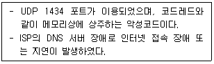
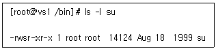
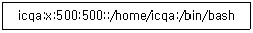
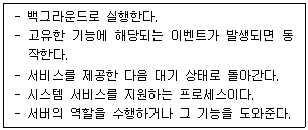
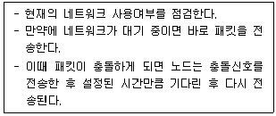
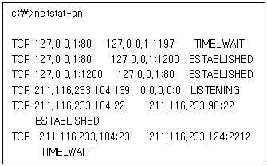
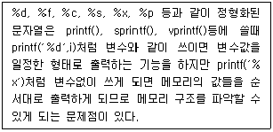

인터넷보안전문가-2급 (2020-05-24 기출문제)
1과목: 정보보호개론
1. 이산대수 문제에 바탕을 두며 인증메시지에 비밀 세션키를 포함하여 전달 할 필요가 없고 공개키 암호화 방식의 시초가 된 키 분배 알고리즘은?
- RSA 알고리즘
- DSA 알고리즘
- MD-5 해쉬 알고리즘
- Diffie-Hellman 알고리즘
(정답률: 63%)

2. S-HTTP(Secure Hypertext Transfer Protocol)에 관한 설명 중 옳지 않은 것은?
- 클라이언트와 서버에서 행해지는 암호화 동작이 동일하다.
- PEM, PGP 등과 같은 여러 암호 메커니즘에 사용되는 다양한 암호문 형태를 지원한다.
- 클라이언트의 공개키를 요구하지 않으므로 사용자 개인의 공개키를 선언해 놓지 않고 사적인 트랜잭션을 시도할 수 있다.
- S-HTTP를 탑재하지 않은 시스템과 통신이 어렵다.
(정답률: 66%)
3. 네트워크상의 부당한 피해라고 볼 수 없는 것은?
- 침입자가 부당한 방법으로 호스트의 패스워드 정보를 입수한 후 유용한 정보를 가져가는 경우
- 특정인이나 특정 단체가 고의로 호스트에 대량의 패킷을 흘려 보내 호스트를 마비시키거나 패킷 루프와 같은 상태가 되게 하는 경우
- 특정인이나 특정 단체가 네트워크상의 흐르는 데이터 패킷을 가로채 내거나 다른 불법 패킷으로 바꾸어 보내는 경우
- HTTP 프로토콜을 이용하여 호스트의 80번 포트로 접근하여 HTML 문서의 헤더 정보를 가져오는 경우
(정답률: 82%)
4. 암호 알고리즘 중 송, 수신자가 동일한 키에 의해 암호화 및 복호화 과정을 수행하는 암호 알고리즘은?
- 대칭키 암호 알고리즘
- 공개키 암호 알고리즘
- 이중키 암호 알고리즘
- 해시 암호 알고리즘
(정답률: 76%)
5. 응용계층 프로토콜로 옳지 않은 것은?
- SMTP
- FTP
- Telnet
- TCP
(정답률: 73%)
6. 암호 프로토콜 서비스에 대한 설명 중 옳지 않은 것은?
- 비밀성 : 자료 유출의 방지
- 접근제어 : 프로그램 상의 오류가 발생하지 않도록 방지
- 무결성 : 메시지의 변조를 방지
- 부인봉쇄 : 송수신 사실의 부정 방지
(정답률: 69%)
7. IPSec 프로토콜에 대한 설명으로 옳지 않은 것은?
- 네트워크 계층인 IP 계층에서 보안 서비스를 제공하기 위한 보안 프로토콜이다.
- 기밀성 기능은 AH(Authentication Header)에 의하여 제공되고, 인증 서비스는 ESP(Encapsulating Security Payload) 에 의하여 제공된다.
- 보안 연계(Security Association)는 사용된 인증 및 암호 알고리즘, 사용된 암호키, 알고리즘의 동작 모드 그리고 키의 생명 주기 등을 포함한다.
- 키 관리는 수동으로 키를 입력하는 수동방법과 IKE 프로토콜을 이용한 자동방법이 존재한다.
(정답률: 63%)
8. 다음은 어떠한 바이러스에 대한 설명인가?

- Michelangelo
- Trojan Horse
- Worm.SQL.Slammer
- Nimda
(정답률: 49%)
9. 네트워크 또는 응용을 위한 보안 대책으로 옳지 않은 것은?
- SSL - 종단간 보안
- PGP - 안전한 전자메일
- Single Sign On - 무선 링크 보안
- Kerboros - 사용자 인증
(정답률: 55%)
10. RSA 암호화 알고리즘에 대한 설명으로 옳지 않은 것은?
- 공개키 암호화 알고리즘 중 하나이다.
- Rivest 암호화, Adleman이 개발하였다.
- 다른 암호화 방식에 비해 계산량이 적어, 저사양의 휴대기기에 주로 사용된다.
- 전자서명에 이용된다.
(정답률: 69%)
2과목: 운영체제
11. Linux에서 특정한 파일을 찾고자 할 때 사용하는 명령어는?
- mv
- cp
- find
- file
(정답률: 77%)
12. DHCP(Dynamic Host Configuration Protocol) Scope 범위 혹은 주소 풀(Address Pool)을 만드는데 주의할 점에 속하지 않는 것은?
- 모든 DHCP 서버는 최소한 하나의 DHCP 범위를 가져야 한다.
- DHCP 주소 범위에서 정적으로 할당된 주소가 있다면 해당 주소를 제외해야 한다.
- 네트워크에 여러 DHCP 서버를 운영할 경우에는 DHCP 범위가 겹치지 않아야 한다.
- 하나의 서브넷에는 여러 개의 DHCP 범위가 사용될 수 있다.
(정답률: 68%)
13. Linux 시스템 파일의 설명으로 옳지 않은 것은?
- /etc/passwd - 사용자 정보 파일
- /etc/fstab - 시스템이 시작될 때 자동으로 마운트 되는 파일 시스템 목록
- /etc/motd - 텔넷 로그인 전 나타낼 메시지
- /etc/shadow - 패스워드 파일
(정답률: 52%)
14. 다음 중 Windows Server 운영체제에서 이벤트를 감사할 때 감사할 수 있는 항목으로 옳지 않은 것은?
- 파일 폴더에 대한 액세스
- 사용자의 로그온과 로그오프
- 메모리에 상주된 프로세스의 사용 빈도
- 액티브 디렉터리에 대한 변경 시도
(정답률: 66%)
15. Windows Server에서 제공하고 있는 VPN 프로토콜인 L2TP(Layer Two Tunneling Protocol)에 대한 설명 중 옳지 않은 것은?
- IP 기반의 네트워크에서만 사용가능하다.
- 헤드 압축을 지원한다.
- 터널 인증을 지원한다.
- IPsec 알고리즘을 이용하여 암호화 한다.
(정답률: 55%)
16. Linux 콘솔 상에서 네트워크 어댑터 ′eth0′을 ′ifconfig′ 명령어로 ′192.168.1.1′ 이라는 주소로 사용하고 싶을 때 올바른 방법은?
- ifconfig eth0 192.168.1.1 activate
- ifconfig eth0 192.168.1.1 deactivate
- ifconfig eth0 192.168.1.1 up
- ifconfig eth0 192.168.1.1 down
(정답률: 70%)
17. Linux의 VI 편집기에서 수정하던 파일을 저장하지 않고 종료 시키는 명령은?
- :q!
- :w!
- :WQ!
- :Wq!
(정답률: 78%)
18. 이미 내린 shutdown 명령을 취소하기 위한 명령은?
- shutdown –r
- shutdown –h
- cancel
- shutdown -c
(정답률: 74%)
19. Linux에서 su 명령의 사용자 퍼미션을 확인한 결과 ′rws′ 이다. 아래와 같이 사용자 퍼미션에 ′s′ 라는 속성을 부여하기 위한 명령어는?

- chmod 755 su
- chmod 0755 su
- chmod 4755 su
- chmod 6755 su
(정답률: 71%)
20. Linux에서 root 유저로 로그인 한 후 ′cp -rf /etc/* ~/temp′ 라는 명령으로 복사를 하였는데, 여기서 ′~′ 문자가 의미하는 뜻은?
- /home 디렉터리
- /root 디렉터리
- root 유저의 home 디렉터리
- 현재 디렉터리의 하위라는 의미
(정답률: 64%)
21. 현재 Linux 서버에 접속된 모든 사용자에게 메시지를 전송하는 명령은?
- wall
- message
- broadcast
- bc
(정답률: 62%)
22. Linux에서 사용자의 ′su′ 명령어 시도 기록을 볼 수 있는 로그는?
- /var/log/secure
- /var/log/messages
- /var/log/wtmp
- /var/log/lastlog
(정답률: 52%)
23. 현재 Linux 서버는 Shadow Password System을 사용하고 있고, ′/etc/passwd′에서 ′icqa′의 부분은 아래와 같다. ′icqa′ 계정을 비밀번호 없이 로그인 되도록 하는 방법은?

- /etc/passwd 파일의 icqa의 세 번째 필드를 공백으로 만든다.
- /etc/shadow 파일의 icqa의 두 번째 필드를 공백으로 만든다.
- /etc/passwd 파일의 icqa의 다섯 번째 필드를 ′!!′으로 채운다.
- /etc/shadow 파일의 icqa의 네 번째 필드를 공백으로 만든다.
(정답률: 76%)
24. 다음 디렉터리에서 각종 라이브러리들에 관한 파일들이 설치되어 있는 것은?
- /etc
- /lib
- /root
- /home
(정답률: 76%)
25. 일반적으로 다음 설명에 해당하는 프로세스는?

- Shell
- Kernel
- Program
- Deamon
(정답률: 56%)
26. SSL 레코드 계층의 서비스를 사용하는 세 개의 특정 SSL 프로토콜 중의 하나이며 메시지 값이 ′1′인 단일 바이트로 구성되는 것은?
- Handshake 프로토콜
- Change cipher spec 프로토콜
- Alert 프로토콜
- Record 프로토콜
(정답률: 53%)
27. Linux에서 네트워크 계층과 관련된 상태를 점검하기 위한 명령어와 유형이 다른 것은?
- ping
- traceroute
- netstat
- nslookup
(정답률: 54%)
28. Windows Server 환경에서 기본 그룹계정의 설명 중 옳지 않은 것은?
- Users - 시스템 관련 사항을 변경할 수 없는 일반 사용자
- Administrators - 컴퓨터/도메인에 모든 액세스 권한을 가진 관리자
- Guest - 파일을 백업하거나 복원하기 위해 보안 제한을 변경할 수 있는 관리자
- Power Users - 일부 권한을 제외한 관리자 권한을 가진 고급 사용자
(정답률: 76%)
29. DNS(Domain Name System) 서버를 처음 설치하고 가장 먼저 만들어야 하는 데이터베이스 레코드는?
- CNAME(Canonical Name)
- HINFO(Host Information)
- PTR(Pointer)
- SOA(Start Of Authority)
(정답률: 65%)
30. 커널의 대표적인 기능으로 옳지 않은 것은?
- 파일 관리
- 기억장치 관리
- 명령어 처리
- 프로세스 관리
(정답률: 61%)
3과목: 네트워크
31. TCP/IP의 Transport Layer에 관한 설명으로 옳지 않은 것은?
- TCP는 흐름제어, 에러제어를 통하여 신뢰성 있는 통신을 보장한다.
- UDP는 신뢰성 제공은 못하지만, TCP에 비해 헤더 사이즈가 작다.
- TCP는 3-way handshake를 이용하여 세션을 성립한 다음 데이터를 주고받는다.
- UDP는 상위 계층을 식별하기 위하여 Protocol Field를 사용한다.
(정답률: 55%)
32. 다음 중 IP Address관련 기술들에 대한 설명으로 옳지 않은 것은?
- DHCP는 DHCP서버가 존재하여, 요청하는 클라이언트들에게 IP Address, Gateway, DNS등의 정보를 일괄적으로 제공하는 기술이다.
- 클라이언트가 DHCP 서버에 DHCP Request를 보낼 때 브로드캐스트로 보낸다.
- 192.168.10.2는 사설 IP Address이다.
- 공인 IP Address를 다른 공인 IP로 변환하여 내보내는 기술이 NAT이다.
(정답률: 57%)
33. 오류검출 방식인 ARQ 방식 중에서 일정한 크기 단위로 연속해서 프레임을 전송하고 수신측에서 오류가 발견된 프레임에 대하여 재전송 요청이 있을 경우 잘못된 프레임만 다시 전송하는 방법은?
- 정지-대기 ARQ
- Go-back-N ARQ
- Selective Repeat ARQ
- 적응적 ARQ
(정답률: 57%)
34. 네트워크 인터페이스 카드는 OSI 7 Layer 중 어느 계층에서 동작하는가?
- 물리 계층
- 세션 계층
- 네트워크 계층
- 트랜스포트 계층
(정답률: 61%)
35. 다음 중 OSI 7 Layer의 각 Layer 별 Data 형태로서 옳지 않은 것은?
- Transport Layer : Segment
- Network Layer : Packet
- Datalink Layer : Fragment
- Physical Layer : bit
(정답률: 66%)
36. SNMP(Simple Network Management Protocol)에 대한 설명으로 옳지 않은 것은?
- RFC(Request For Comment) 1157에 명시되어 있다.
- 현재의 네트워크 성능, 라우팅 테이블, 네트워크를 구성하는 값들을 관리한다.
- TCP 세션을 사용한다.
- 상속이 불가능하다.
(정답률: 60%)
37. 전송을 받는 개체 발송지에서 오는 데이터의 양이나 속도를 제한하는 프로토콜의 기능은?
- 에러제어
- 순서제어
- 흐름제어
- 접속제어
(정답률: 74%)
38. 다음의 매체 방식은?

- Token Passing
- Demand Priority
- CSMA/CA
- CSMA/CD
(정답률: 64%)
39. Distance Vector 알고리즘을 사용하는 프로토콜로 바르게 짝지어진 것은?
- OSPF, RIP
- RIP, EIGRP
- IGRP, RIP
- EIGRP, IGRP
(정답률: 52%)
40. IP Address ′172.16.0.0′인 경우에 이를 14개의 서브넷으로 나누어 사용하고자 할 경우 서브넷 마스크는?
- 255.255.228.0
- 255.255.240.0
- 255.255.248.0
- 255.255.255.248
(정답률: 57%)
41. TCP와 UDP의 차이점 설명으로 옳지 않은 것은?
- 데이터 전송형태로 TCP는 Connection Oriented방식이고 UDP는 Connectionless방식이다.
- TCP가 UDP보다 데이터 전송 속도가 빠르다.
- TCP가 UDP보다 신뢰성이 높다.
- TCP가 UDP에 비해 각종 제어를 담당하는 Header 부분이 커진다.
(정답률: 68%)
42. 라우터 명령어 중 NVRAM에서 RAM으로 configuration file을 copy하는 명령어는?
- copy flash start
- copy running-config startup-config
- copy startup-config running-config
- wr mem
(정답률: 57%)
43. 방화벽에서 내부 사용자들이 외부 FTP에 자료를 전송하는 것을 막고자 한다. 외부 FTP에 Login 은 허용하되, 자료전송만 막으려면 몇 번 포트를 필터링 해야 하는가?
- 23
- 21
- 20
- 25
(정답률: 50%)
44. 광섬유케이블의 구성요소로 옳지 않은 것은?
- 코어
- 크래드
- 코팅
- 스레드
(정답률: 54%)
45. 자신의 물리 주소(MAC Address)를 알고 있으나 IP Address를 모르는 디스크가 없는 호스트를 위한 프로토콜로서, 자신의 IP Address를 모르는 호스트가 요청 메시지를 브로드 캐스팅하고, 이의 관계를 알고 있는 서버가 응답 메시지에 IP 주소를 되돌려 주는 프로토콜은?
- ARP(Address Resolution Protocol)
- RARP(Reverse Address Resolution Protocol)
- ICMP(Internet Control Message Protocol)
- IGMP(Internet Group Management Protocol)
(정답률: 62%)
4과목: 보안
46. 보안상의 문제가 있는 시스템 프로그램과 크래커(Cracker)의 Exploit Program이 서로 경쟁 상태에 이르게 하여 시스템 프로그램이 갖는 권한으로 파일에 대한 접근을 가능하게 하는 방법은?
- Race Condition Problem
- Boundary Condition Problem
- Input Validation Problem
- Access Validation Problem
(정답률: 59%)
47. 스푸핑 공격의 한 종류인 스위치 재밍(Switch Jamming) 공격에 대한 순차적 내용으로 옳지 않은 것은?
- 스위치 허브의 주소 테이블에 오버 플로우가 발생하게 만든다.
- 스위치가 모든 네트워크 포트로 브로드 캐스팅하게 만든다.
- 오버 플로우를 가속화하기 위하여 MAC 주소를 표준보다 더 큰 값으로 위조하여 스위치에 전송한다.
- 테이블 관리 기능을 무력화 하고 패킷 데이터를 가로챈다.
(정답률: 49%)
48. L2 스위칭 공격에 대한 설명으로 옳지 않은 것은?
- 하드웨어에 대한 공격과 트래픽 흐름을 변경하는 네트워크 공격으로 분류할 수 있다.
- MAC Flooding, ARP Spoofing, Spanning Tree Attack 등이 있다.
- 공격이 진행되고 있는 상태에서 스위치와 연결된 정상적인 호스트가 통신할 때, 스위치의 MAC 정보에는 영향을 미치지 않는다.
- MAC Flooding은 한 포트에서 수 천 개의 호스트가 스위치와 연결되어 있는 것으로 보이지만 실제는 변조된 MAC 정보를 공격 호스트에서 발생시키는 것이다.
(정답률: 59%)
49. 방화벽의 주요 기능으로 옳지 않은 것은?
- 접근제어
- 사용자 인증
- 로깅
- 프라이버시 보호
(정답률: 58%)
50. PGP(Pretty Good Privacy)에서 지원하지 못하는 기능은?
- 메시지 인증
- 수신 부인방지
- 사용자 인증
- 송신 부인방지
(정답률: 61%)
51. 근거리통신망에서 NIC(Network Interface Card) 카드를 Promiscuous 모드로 설정하여 지나가는 프레임을 모두 읽음으로써 다른 사람의 정보를 가로채기 위한 공격 방법은?
- 스니핑
- IP 스푸핑
- TCP wrapper
- ipchain
(정답률: 59%)
52. 종단 간 보안 기능을 제공하기 위한 SSL 프로토콜에서 제공되는 보안 서비스로 옳지 않은 것은?
- 통신 응용간의 기밀성 서비스
- 인증서를 이용한 클라이언트와 서버의 인증
- 메시지 무결성 서비스
- 클라이언트에 의한 서버 인증서를 이용한 서버 메시지의 부인방지 서비스
(정답률: 57%)
53. Windows 명령 프롬프트 창에서 ′netstat -an′ 을 실행한 결과이다. 옳지 않은 것은? (단, 로컬 IP Address는 211.116.233.104 이다.)

- http://localhost 로 접속하였다.
- NetBIOS를 사용하고 있는 컴퓨터이다.
- 211.116.233.124에서 Telnet 연결이 이루어져 있다.
- 211.116.233.98로 ssh를 이용하여 연결이 이루어져 있다.
(정답률: 57%)
54. SYN 플러딩 공격에 대한 설명으로 올바른 것은?
- TCP 프로토콜의 3-way handshaking 방식을 이용한 접속의 문제점을 이용하는 방식으로, IP 스푸핑 공격을 위한 사전 준비 단계에서 이용되는 공격이며, 서버가 클라이언트로부터 과도한 접속 요구를 받아 이를 처리하기 위한 구조인 백로그(backlog)가 한계에 이르러 다른 클라이언트로부터 오는 새로운 연결 요청을 받을 수 없게 하는 공격이다.
- 함수의 지역 변수에 매개변수를 복사할 때 길이를 확인하지 않은 특성을 이용하는 공격 방법이다.
- 네트워크에 연결된 호스트들의 이용 가능한 서비스와 포트를 조사하여 보안 취약점을 조사하기 위한 공격방법이다.
- 패킷을 전송할 때 암호화하여 전송하는 보안 도구이다.
(정답률: 73%)
55. Linux 파일 시스템에 대한 사용자에 속하지 않는 것은?
- 소유자 : 파일이나 디렉터리를 처음 만든 사람
- 사용자 : 현재 로그인한 사용자
- 그룹 : 사용자는 어느 특정 그룹에 속하며 이 그룹에 속한 다른 사람들을 포함
- 다른 사용자 : 현재 사용자 계정을 가진 모든 사람
(정답률: 40%)
56. 다음에서 설명하는 것은?

- Sniffing
- IP Spoofing
- Race Condition
- Format String Bug
(정답률: 57%)
57. 사용자의 개인 정보를 보호하기 위한 바람직한 행동으로 보기 어려운 것은?
- 암호는 복잡성을 적용하여 사용한다.
- 로그인 한 상태에서 자리를 비우지 않는다.
- 중요한 자료는 따로 백업을 받아 놓는다.
- 좋은 자료의 공유를 위해 여러 디렉터리에 대한 공유를 설정해 둔다.
(정답률: 72%)
58. Windows Server의 각종 보안 관리에 관한 설명이다. 그룹정책의 보안 설정 중 옳지 않은 것은?
- 계정정책 : 암호정책, 계정 잠금 정책, Kerberos v5 프로토콜 정책 등을 이용하여 보안 관리를 할 수 있다.
- 로컬정책 : 감사정책, 사용자 권한 할당, 보안 옵션 등을 이용하여 보안 관리를 할 수 있다.
- 공개 키 정책 : 암호화 복구 에이전트, 인증서 요청 설정, 레지스트리 키 정책, IP보안 정책 등을 이용하여 보안 관리를 할 수 있다.
- 이벤트 로그 : 응용 프로그램 및 시스템 로그 보안 로그를 위한 로그의 크기, 보관 기간, 보관 방법 및 액세스 권한 값 설정 등을 이용하여 보안 관리를 할 수 있다.
(정답률: 49%)
59. Linux 명령어 중 ′/var/log/utmp′와 ′/var/log/wtmp′를 모두 참조하는 명령어는?
- lastlog
- last
- who
- netstat
(정답률: 51%)
60. 침입 탐지 시스템을 비정상적인 침입탐지 기법과 오용탐지 기법으로 구분할 경우, 오용탐지기법은?
- 상태 전이 분석
- 행위 측정 방식들의 결합
- 통계적인 방법
- 특징 추출
(정답률: 55%)